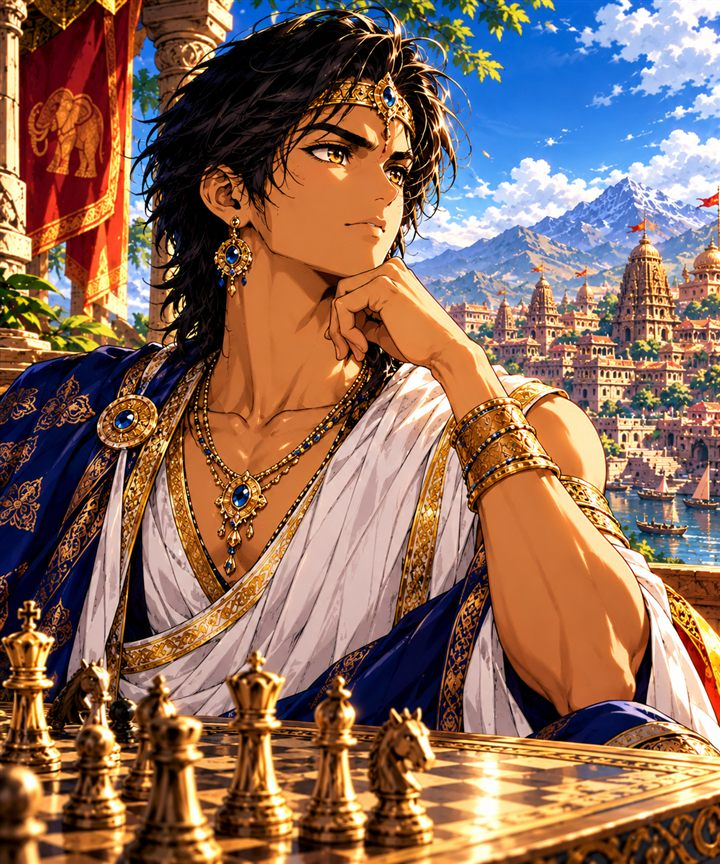

Ninjas, créatures de l'océan, plantes, animaux, oiseaux, guerriers de l'Antiquité et soldats modernes : chaque pièce attaque, riposte et donne le mat à sa façon. Gratuit, sans publicité, sur téléphone comme sur ordinateur.
Fais grandir ta collection en jouant : chaque monde a ses pièces, ses armes et ses mats spectaculaires.
Du premier coup au premier tournoi, Ata Wawé t'accompagne.
Des débutants aux champions, avec un entraîneur qui explique tes coups et une analyse complète de tes parties.
Les règles, les mats, les finales et les ouvertures, expliqués pas à pas puis mis en pratique.
Les mêmes problèmes pour tous les joueurs chaque jour, avec un classement de la journée et une saison chaque mois.
Invite tes amis, joue à distance avec pendule, organise des tournois individuels ou par équipes.
Un professeur crée son club, ses élèves le rejoignent avec un code, et il suit la progression de chacun.
Rejoue n'importe quelle partie en 3D et enregistre-la en vidéo pour la partager.

Inspiré de la légende de Sissa, l'inventeur des échecs et des grains de riz sur l'échiquier, Ata Wawé récompense chaque progrès : grades, trésors, quêtes du jour et titres à débloquer.
Rejoindre l'aventureOuvre le jeu dans ton navigateur puis choisis « Ajouter à l'écran d'accueil » : il fonctionne ensuite comme une application, même hors connexion.
Ouvrir le jeu